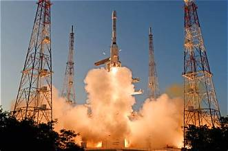
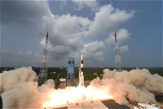
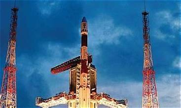
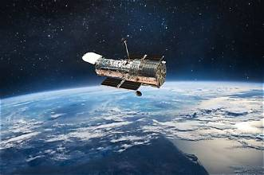
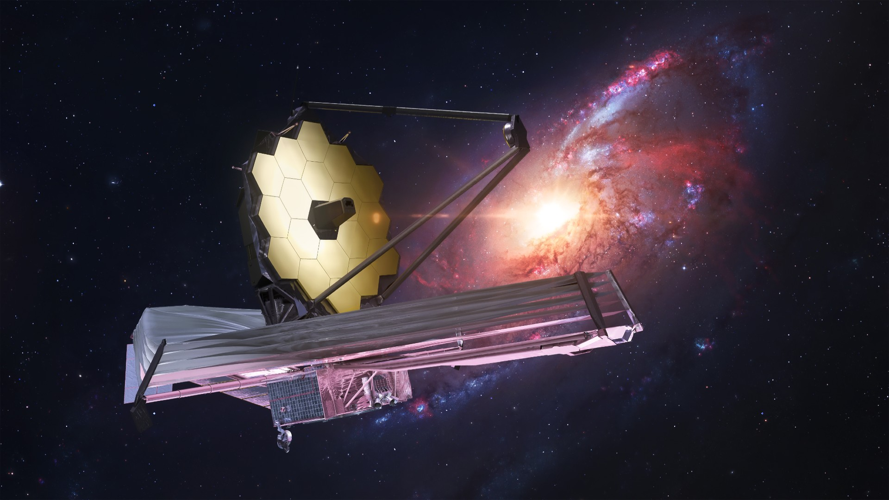
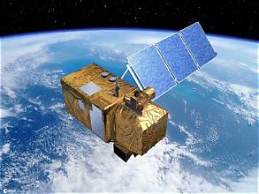
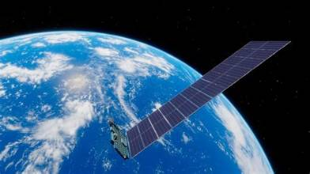
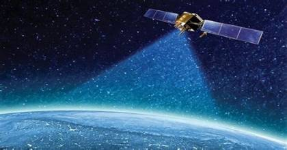
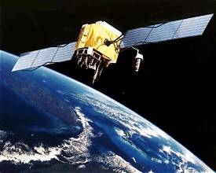

Our Satellite Collection
Explore important satellites and their contributions
to science, communication, and Earth observation.
All Satellites
Communication
Navigation
Weather & Earth Observation
Space Science

ISRO · INDIA
INSAT-3DS
Weather Satellite
Monitors weather systems, atmospheric conditions,
and ocean-related conditions to support weather
forecasting and disaster warnings.
Launch Date
17 Feb 2024
Launch Vehicle
GSLV-F14
Orbit
Geostationary
Purpose
Weather Forecasting
Explore Satellite →

ISRO · INDIA
EOS-06
Earth Observation
Studies ocean colour, sea surface temperature,
and ocean winds to support ocean forecasting,
climate research, and marine applications.
Launch Date
26 Nov 2022
Launch Vehicle
PSLV-C54
Orbit
Polar Orbit
Purpose
Ocean Monitoring
Explore Satellite →

ISRO · INDIA
Cartosat-3
Earth Imaging
Provides high-resolution images of Earth's
surface for mapping, urban planning,
infrastructure development, and land management.
Launch Date
27 Nov 2019
Launch Vehicle
PSLV-C47
Orbit
Low Earth Orbit
Purpose
High-Resolution Imaging
Explore Satellite →

NASA · USA
Hubble Space Telescope
Space Observatory
Observes stars, galaxies, nebulae, and distant
objects to help scientists understand the
history and evolution of the universe.
Launch Date
24 Apr 1990
Launch Vehicle
Space Shuttle Discovery
Orbit
Low Earth Orbit
Purpose
Astronomy
Explore Satellite →

NASA · ESA · CSA
James Webb Telescope
Infrared Observatory
Studies the early universe, distant galaxies,
star formation, and the atmospheres of planets
beyond our Solar System.
Launch Date
25 Dec 2021
Launch Vehicle
Ariane 5
Orbit
Sun-Earth L2
Purpose
Infrared Astronomy
Explore Satellite →

ESA · EUROPE
Sentinel-2A
Earth Monitoring
Captures multispectral images of Earth's land
and coastal areas for agriculture, forestry,
environmental monitoring, and disaster response.
Launch Date
23 Jun 2015
Launch Vehicle
Vega
Orbit
Sun-Synchronous
Purpose
Land Monitoring
Explore Satellite →

SPACEX · USA
Starlink
Communication Network
A large constellation of satellites that
provides broadband internet connectivity
to users in many parts of the world.
First Launch
24 May 2019
Launch Vehicle
Falcon 9
Orbit
Low Earth Orbit
Purpose
Internet Connectivity
Explore Satellite →

ISRO · INDIA
NavIC
Regional Navigation System
India's independent navigation system provides positioning,
navigation and timing services across India and surrounding
regions for transport, mapping and emergency services.
System
NavIC
Orbit
Geostationary / Geosynchronous
Purpose
Positioning
Coverage
India & Region
Explore Satellite →

UNITED STATES · GPS
GPS
Global Navigation System
The Global Positioning System uses a constellation of
satellites to provide location, navigation and timing
services to users worldwide.
System
GPS
Orbit
Medium Earth Orbit
Purpose
Navigation & Timing
Coverage
Global
Explore Satellite →
No satellites found in this category.
Satellite Applications
Satellites support essential services and scientific research
in everyday life.
Communication
Television broadcasting, satellite internet, telephone
services and communication in remote locations.
Navigation
GPS and NavIC help determine location, plan routes,
synchronize timing and support transport systems.
Weather & Earth Observation
Weather forecasting, cyclone monitoring, agriculture,
forest observation, mapping and disaster management.
Understanding Satellite Orbits
A satellite's orbit depends on its mission and the services it provides.
Low Earth Orbit (LEO)
Relatively close to Earth. Used by Earth-imaging satellites,
the International Space Station and many communication
constellations.
Medium Earth Orbit (MEO)
Higher than LEO. Commonly used by navigation systems
such as GPS.
Geostationary Orbit (GEO)
At about 35,786 km above the equator, a satellite's orbital
period matches Earth's rotation, making it appear stationary
relative to the ground.
Sun-Synchronous Orbit
A near-polar orbit that allows satellites to observe
locations under similar local sunlight conditions,
useful for Earth observation.
Satellites Connect Our World
From observing Earth to exploring distant galaxies,
satellites help us understand our planet and the universe.